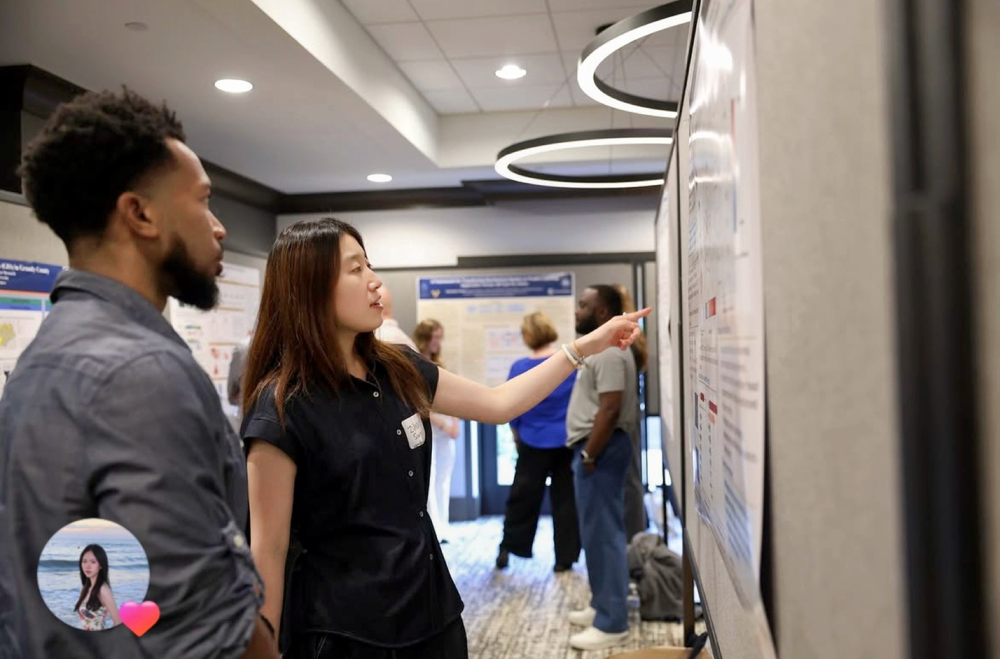

VSEC Symposium · 2026 Open image ↗01 / Urban climate
Micro-Urban Heat Island Effects of Surface Parking Lots
How do parking-lot design and the surrounding landscape influence extreme surface temperatures? I built and validated a geospatial inventory of more than 2,000 open-air parking lots, then combined Landsat, LiDAR, land-cover, and urban-form data to identify the strongest environmental drivers of heat.
Manuscript in preparation · AGU 2026 presentation
View AGU 2026 abstract ↗